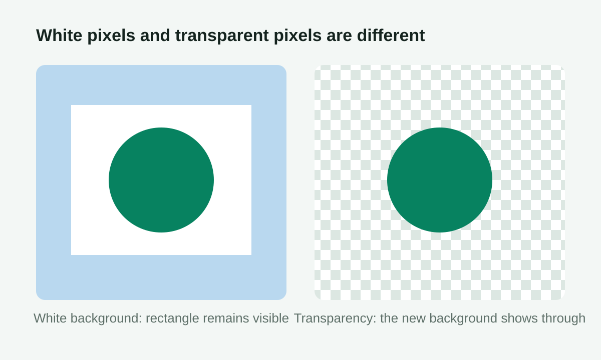
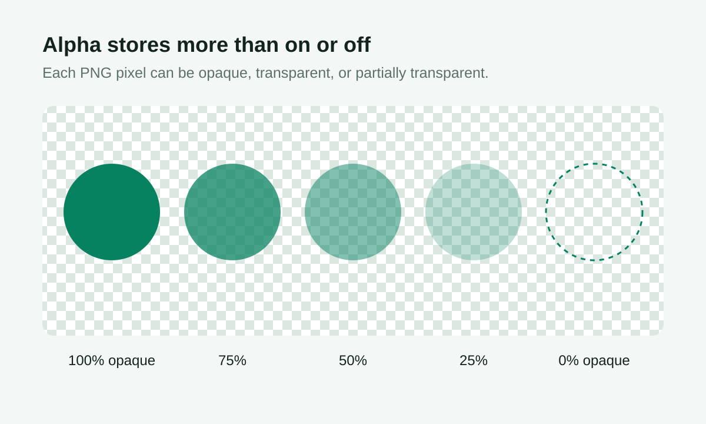

Visual PNG guide
PNG Transparent Background: Alpha vs White
A PNG transparent background stores opacity for individual pixels. Unlike a white background, transparent areas reveal whatever page, slide, thumbnail, or design sits behind the image.


Transparent background is not the same as white background
A white-background image simply has white pixels behind the subject. When placed on a colored design, the white rectangle is still visible. A transparent PNG stores transparency information, so empty areas reveal the page, poster, or video background behind it.
How alpha channels work
PNG supports an alpha channel, which records the opacity of each pixel. A pixel can be fully opaque, fully transparent, or partially transparent. This is why PNG is commonly used for logos, icons, stickers, product cutouts, and design assets.
| Alpha value | Visible result | Typical use |
|---|---|---|
| 255 / 100% | Fully opaque | The solid subject |
| 1-254 | Partially transparent | Soft edges, shadows, antialiasing |
| 0 / 0% | Fully transparent | Removed background area |
Why logos often use transparent PNG
Logos need to appear on many backgrounds. If a logo has a white box behind it, it looks awkward on dark pages or colored posters. A transparent PNG lets the logo blend naturally into websites, presentations, thumbnails, and ecommerce images.
Best images for transparent background cleanup
Solid-color backgrounds, white product photos, simple icons, and clean logos are the best candidates. Hair, glass, shadows, and complex backgrounds usually need more advanced cutout tools.
How transparent PNGs are used
Transparent PNG files are common in ecommerce listings, website headers, video thumbnails, presentation slides, and social graphics. They make it easier to place the same subject on white, dark, colored, or patterned backgrounds without a visible rectangular box.
What the PNGToolbox cleanup tool can and cannot do
The tool is designed for simple color-based cleanup. It works by comparing pixels to a selected background color and reducing opacity for matching areas. It is not a full AI cutout tool, so complex scenes may need manual editing after export.
Try the solid-background cleanup tool and inspect the measured percentage of fully transparent pixels before downloading.
Diagrams and alpha checks reviewed July 25, 2026. See the PNG output testing method.
FAQ
Why does my transparent PNG still show a white box?
The image may not actually contain transparency, or the viewer may be displaying a white background behind the transparent pixels. Try placing it on a colored background to check.
What does tolerance mean?
Tolerance controls how close a pixel color must be to the selected background color before it becomes transparent. Higher tolerance removes more similar colors but can also affect the subject.
What does feathering do?
Feathering softens the transition around removed areas. It can reduce harsh edges on logos and product cutouts.